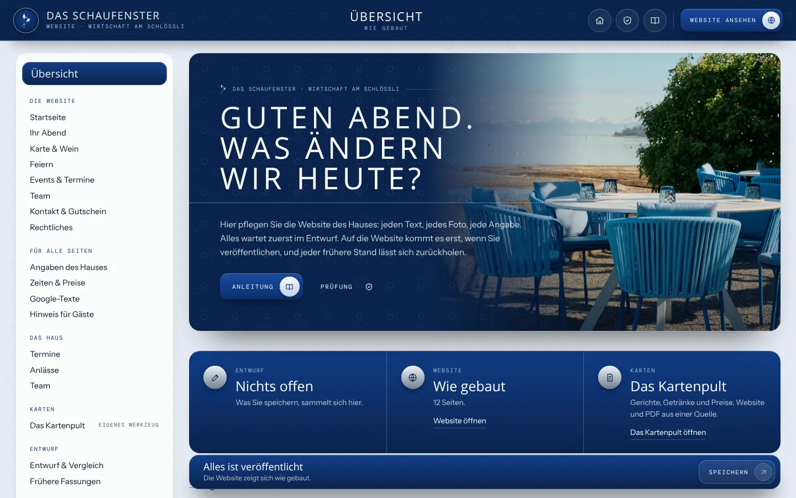
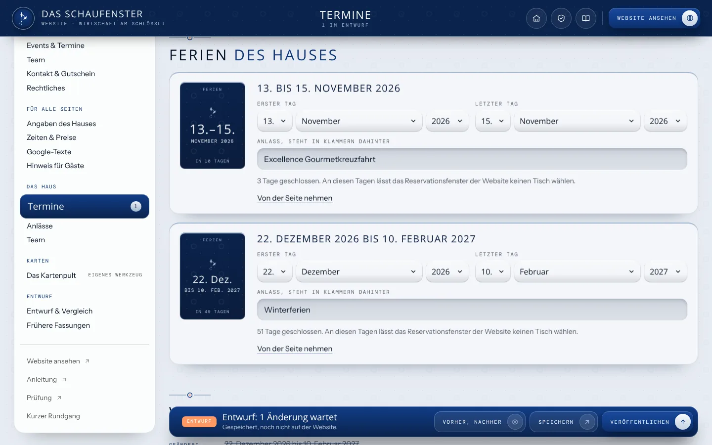
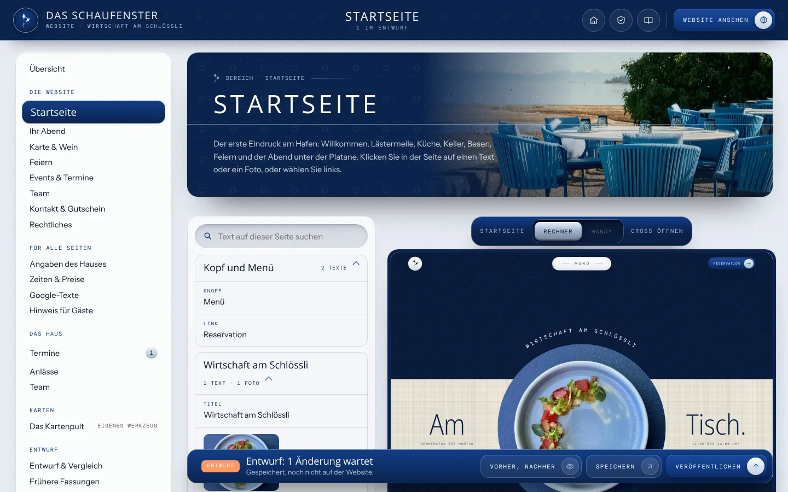
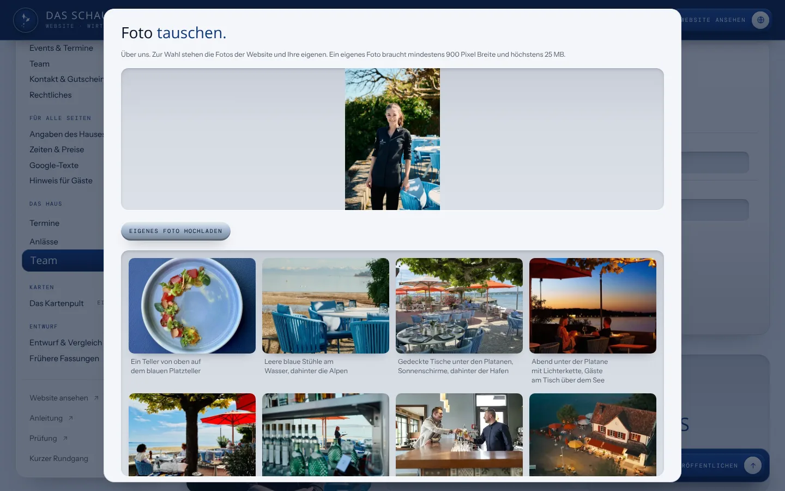
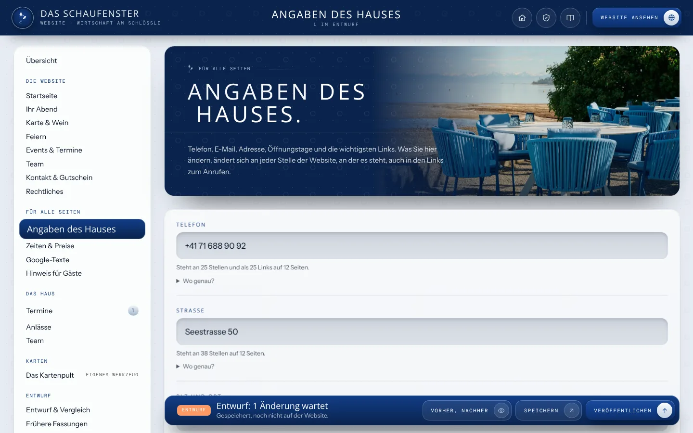
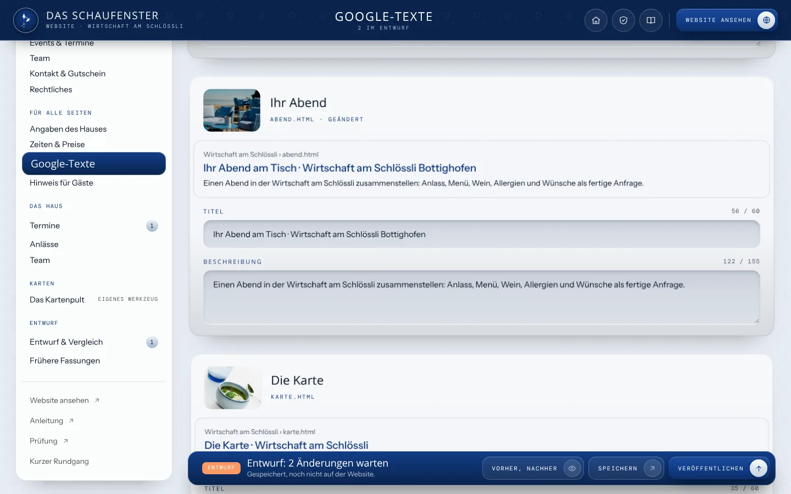
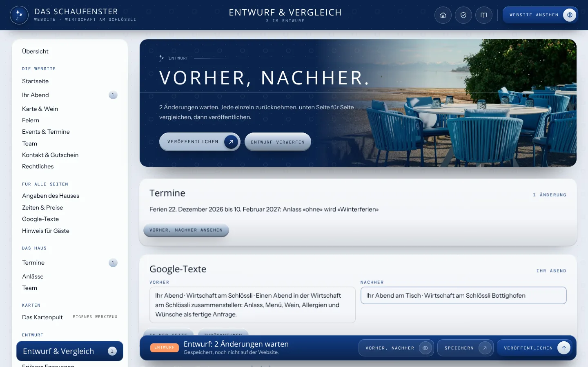
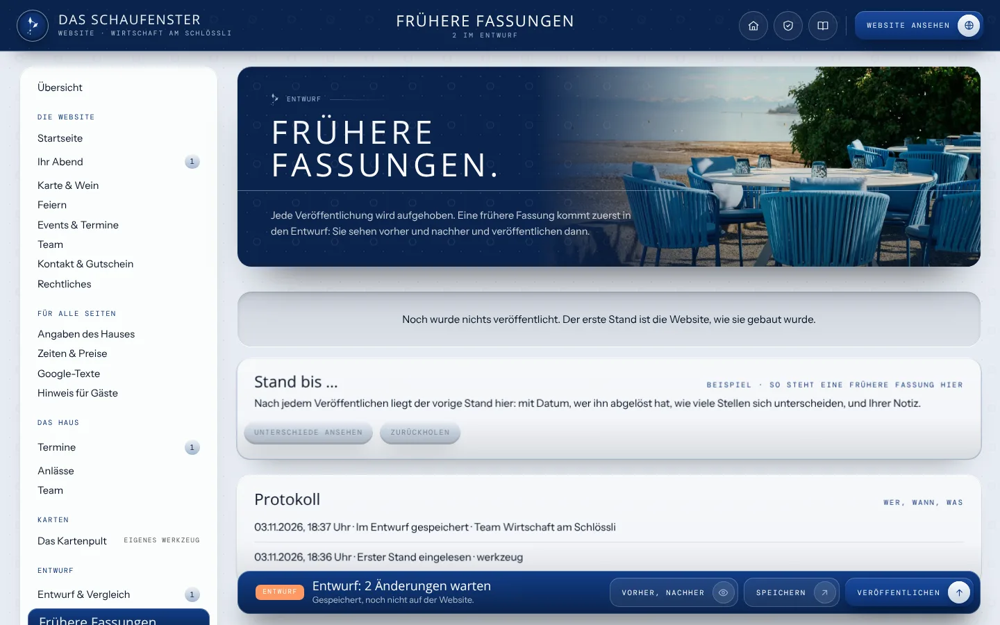

Website pflegen
So pflegen Sie Ihre Website.
Mit «Website pflegen» pflegen Sie die Website der Wirtschaft am Schlössli selbst. Die Ferien, jeder Text, jedes Foto, Telefon, Adresse, die Öffnungszeiten und die Texte für Google lassen sich hier ändern. Nichts geht von selbst online: Was Sie speichern, wartet im Entwurf, bis Sie es veröffentlichen. Jeder frühere Stand lässt sich zurückholen.
1
Die Übersicht
Oben sehen Sie, ob etwas im Entwurf wartet und wann die Website zuletzt veröffentlicht wurde. Darunter «Häufig gebraucht»: die Aufgaben, die im Alltag am meisten vorkommen. Ganz unten jeder Bereich der Website mit einem Foto.
Links im Rand finden Sie dieselben Bereiche, dazu «Angaben des Hauses», «Zeiten & Preise», «Google-Texte», «Hinweis für Gäste», die Termine, die Anlässe und das Team. Am Handy öffnet «Bereiche» oben den Rand.

2
Ferien eintragen
Unter «Termine» steht jeder Ferienblock des Hauses mit erstem und letztem Tag und, wenn Sie möchten, einem Anlass in Klammern. An diesen Tagen lässt das Reservationsfenster der Website keinen Tisch wählen, und auf der Startseite stehen die Ferien unter den Öffnungszeiten. «Neue Ferien» legt einen weiteren Block an.
Verschieben Sie Ferien, wählen Sie Tag, Monat und Jahr neu. «Von der Seite nehmen» nimmt einen Block heraus; jeder veröffentlichte Stand lässt sich zurückholen. Darunter zeigt die Vorschau die Startseite mit Ihren Ferien, am Rechner und am Handy, und die Liste der Anlässe am Hafen.

3
Einen Text ändern
Bereich wählen, zum Beispiel «Startseite». Rechts steht die Seite, wie die Gäste sie sehen. Klicken Sie auf den Text, den Sie ändern möchten: links öffnet sich das Feld, die Seite rechts schreibt beim Tippen mit.
Steht derselbe Text auf mehreren Seiten, bietet das Feld «An allen … Stellen ändern». «Wie ursprünglich» holt den gebauten Text zurück. Statt etwas zu löschen, lässt sich ein ganzer Abschnitt ausblenden und später «Wieder zeigen». Gerichte, Preise und Weine pflegen Sie in «Karten».

4
Foto tauschen oder eigenes Foto hochladen
Klicken Sie in der Seite auf ein Foto, oder unter «Team» auf das Foto eines Menschen. Zur Wahl stehen alle Fotos der Website. Mit «Eigenes Foto hochladen» kommt ein neues dazu: mindestens 900 Pixel breit, höchstens 25 MB, im Format JPG, PNG oder WebP. Das Werkzeug setzt es in vier Grössen für Rechner und Handy.
Die Bildbeschreibung darunter lesen Vorlesegeräte und Suchmaschinen. Ein Satz, was auf dem Foto zu sehen ist.

5
Telefon, Adresse und Instagram
Unter «Angaben des Hauses» steht jede Angabe, die auf vielen Seiten vorkommt, mit dem Hinweis, wie oft und auf wie vielen Seiten. Sie ändern sie einmal, und sie ist überall neu, auch im Link zum Anrufen am Handy.
Die Öffnungs- und Küchenzeiten und die Preise im Text finden Sie unter «Zeiten & Preise».

6
Google-Texte
Für jede Seite ein Titel und eine Beschreibung, so wie sie in der Trefferliste von Google erscheinen. Die Vorschau darüber zeigt es beim Tippen. Etwa 60 Zeichen Titel und 155 Zeichen Beschreibung zeigt Google ganz, die Zahl wird farbig, wenn es länger wird.

7
Speichern, ansehen und veröffentlichen
Solange etwas nicht gespeichert ist, steht unten «Eingaben noch nicht gespeichert» und der Knopf «Speichern» leuchtet. Nach dem Speichern erscheint eine Quittung mit «Vorher/nachher ansehen» und «Rückgängig». Tastenkürzel: Cmd + S am Mac, Strg + S unter Windows.
«Vorher, nachher» zeigt jede Änderung mit dem alten und dem neuen Wortlaut, einzeln zurücknehmbar. «Veröffentlichen» bringt den Entwurf auf die Website, Texte, Fotos und Ferien zusammen, mit einer kurzen Notiz für die früheren Fassungen.

8
Einen früheren Stand zurückholen
Unter «Frühere Fassungen» steht jede Veröffentlichung mit Datum und Notiz. «Zurückholen» legt sie in den Entwurf. Auf die Website kommt sie erst, wenn Sie wieder veröffentlichen. Die Ferien haben ihre früheren Fassungen in ihrer Ansicht, ganz unten.

9
Wenn etwas nicht klappt
Jede Meldung trägt den Knopf «Was tun?». Er führt zur Prüfung: Sie läuft auch dann, wenn das Werkzeug selbst nicht startet, sagt, was los ist, und was zu tun ist. Gespeichertes geht dabei nie verloren.